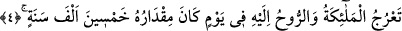

isimlerindendir.
“el-Meâric” kelimesi “ma’rac” kelimesinin çoğuludur ve “çıkma, yükselme yeri”
mânâsınadır.
Râğıb İsfahânî’nin ifâdesine göre Arapça’da “el-Urûc”, yukarıya yükselmek
demektir. Aynı kökten türeyen “meâric” ise yükselme dereceleri anlamınadır. “Zi’l-
Meâric” ise “Allah âlemden yücedir” mânâsına gelir.
“Meâric” kelimesinden murâd, biri diğerinin üzerinde olan dokuz felektir. Bunlar yedi
semâ, Kürsî ve Arş’tır.
4. Melekler ve Rûh (Cebrâil), oraya, mikdarı (dünya senesi ile) elli bin yıl olan bir
günde yükselip çıkar.
Sâdece inmek ve yukarı çıkmakla görevli “Melekler” Müheymin melekleri ve
benzerleri bu hükümden müstesnâdır. Çünkü meleklerin içerisinde gökten hiç
inmeyenler olduğu gibi yeryüzünden asla semâya yükselmeyen melekler de vardır.
“Ve ruh” yâni Cebrâil... Cebrâil diğer meleklerden üstün bir meziyete sâhip olduğu
ve fazîletli bulunduğu için ayrıca zikredilmiştir. Cenâb-ı Hakk’ın şu sözünde de aynı şey
olmuştur: “O gecede, Rablerinin izniyle melekler ve ruh (Cebrâil) her iş için iner
dururlar.” (el-Kadr, 97/4). Meleklerin inişi bir âyette, semâya yükselişi de diğer bir
âyette zikredilmiş oldu.
Melekler ve Cebrâil, Allah Teâlâ’nın emrinin inmiş olduğu noktadan O’nun Arş ve
emirlerinin inmeye başladığı noktaya çıkarlar. Bu âyeti, Hz. İbrahim’in “Ben Rabbime
gidiyorum.” (es-Saffat, 37/99) ifâdesi gibi anlamalıdır. Orada da İbrahim (a.s.)
“Rabbime gidiyorum” derken “Rab’bımın bana gitmemi emrettiği yere gidiyorum”
demiş olmaktadır. Meleklerin Arş’a yükselmeleri, Rabbe yükselmeleri olarak kabul
edilmiştir. Çünkü Arş, Rahmânî sıfatların tecellî ettiği makamdır. Allah’ın ahkâmı
Arş’tan inmeye başlar. Melekler Âdemoğlunun amellerini alıp Allah’ın dilediği yere
inerler. Sehl Tüsterî (r.a.) şöyle der: “Melekler ve Rûh, Âdemoğlunun amellerini
Allah’a yükseltirler.” Rûh o esnâda bu amellere nezâret eder.
“Mikdarı elli bin yıl olan bir günde yükselip çıkar.” “Fî”, harf-i cerri “ilâ” gibi
“ta’rucu” fiiline bağlıdır. Bu elli bin yıl, insanların saydıkları sene cinsindendir.
Nitekim bunu Allah bir başka âyet-i kerîmede “Sonra “bütün işler” sizin
sayageldiklerinize göre bin sene tutan bir günde O’nun nezdine çıkar.” (es-Secde,
32/5) şeklinde ifâde buyurmaktadır. Bu son ifâdelerin -dilbilgisi açısından- tahliline
gelince; “hamsîne” kelimesi kâne’nin haberidir. Bu teşbîh-i beliğ kabilindendir. Bu
ifâdenin teşbihsiz olan aslı; “Melekler ve ruh oraya mikdarı elli bin sene olan bir günde
yükselip çıkarlar” demektir.